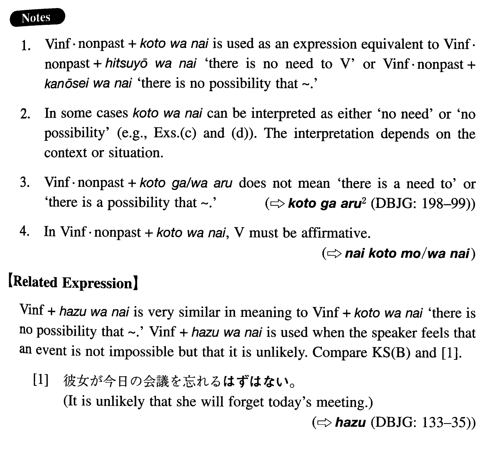

←
DoJG
→
ことはない
(I. 146)
Example sentences
(ksb).
あんな男の言うことを聞く
ことはない
。
There's no need to listen to a man like that.
(ksb).
彼女が今日の会議を忘れる
ことはない
と思います。
I think that there is no possibility that she will forget today's meeting.
(a).
あんな奴に親切にしてやる
ことはない
。
There is no need to be kind to a guy like that.
(b).
何もそんなに慌てる
ことはない
。
There is no need at all to be in such a hurry.
(c).
君が来る
ことはない
と思います。
1. I don't think it will be necessary for you to come here. 2. I think that there is no possibility that you will come here.
(d).
彼がわざわざ出て行く
ことはない
でしょう。
1. There will probably be no need for him to take the trouble to go out there. 2. There is no possibility that he will go out there.
(e).
もうお目にかかる
ことはない
かもしれませんね。
I might not have a chance to see you again.
(f).
多分私が教える
ことはない
と思います。
I don't think there is a possibility that I will teach.
Formation
Vinformal nonpast
ことはない
Affirmation
行く
ことはない
There’s no need to go/there is no possibility that someone will go
